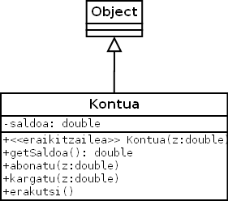
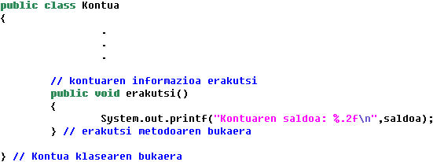
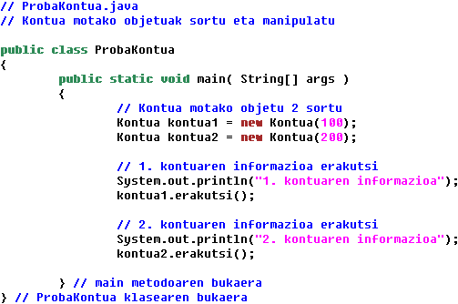

Programazioa > Objetuei bideratutako programazioaren oinarriak >
7. ariketa
Kontua izeneko klase bat inplementatzea nahi da hurrengo klase-diagrama kontutan hartuz. Ondoren, kontu ezberdinak sortzeko eta manipulatzeko, ProbaKontua izeneko beste klase bat sortuko dugu.
Kasu honetan erakutsi() izeneko metodo bat gehituko diogu Kontua klaseari. Metodo hau kontuen informazioa pantailatik erakusteko erabiliko da.
Klase-diagrama
- Kontua

Kodea
- Kontua.java

- ProbaKontua.java
